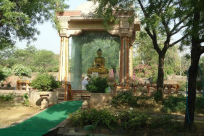
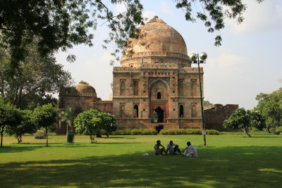
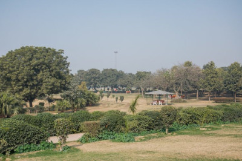
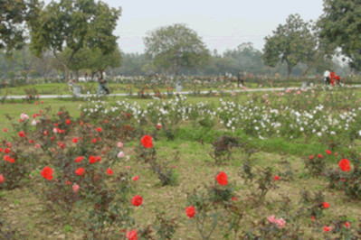
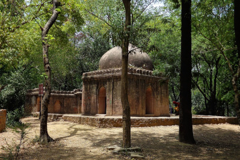
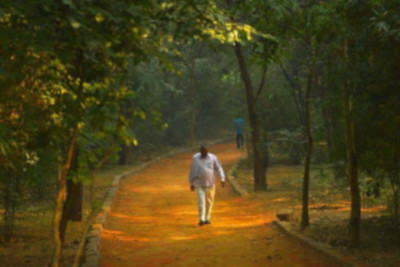
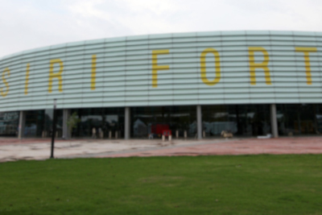
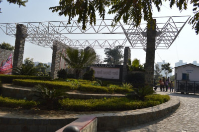

Parks
1. Garden of Five Senses
One of the Best Park in Delhi sprawling over an area of 20 acres Garden of Five Senses is located in Saidul Ajaib village, opposite to Saket New Delhi. Park have various stainless steel birds and animals mounted on slate clad pillars, food and shopping court, Khas Bagh . The garden offers complete facilities to relax and unwind in a peaceful surroundings.
Location: Near Saket Metro Station, Mehrauli-Badarpur Road,Said-ul-Ajaib, M.B. Road, South of Saket, New Delhi 110044, India
2.Buddha Jayanti Park

Buddha Jayanti Park is one of the most beautiful and popular parks in New Delhi, and was established to celebrate the 2500th anniversary of Gautama Buddha’s enlightenment. With large green spaces, lakes, colourful flowers and the chirping of birds and crickets, Buddha Jayanti Park is the perfect spot for those searching for peace in the city.
Location: Vandemataram Marg, Central Ridge Reserve Forest, New Delhi, Delhi 110021
3. Lodi Gardens

Lodi Gardens (Lodhi Gardens), known for its lush greenery is one of the most popular and beautiful pre wedding photo shoot locations in Delhi. This beautiful garden is a perfect in the early morning or during dawn. The garden is known for its gumbad, tomb & mosque and walled enclosure across the garden. The garden provides mesmerizing pictures within the natural background. The lush greenery and colorful flowers brighten up the expressions of the bride and the groom.
Location: Lodhi Gardens, Lodhi Estate, New Delhi, Delhi 110003
4. Japanese Park

Location: Swarn Jayanti Park, Sector 10, Rohini, Delhi, Delhi, 110085, India
5.National Rose Garden

Here a rose, there a rose, everywhere a rose. As the name suggests, the National Rose Garden is solely dedicated to the symbol of love that has turned lovers into poets and painters into artists – roses. The park exhibits the most beautiful varieties of roses that been sourced from all over the world. Located in the heart of New Delhi it the most frequently visited park in the city. The stunning fields of roses spread out over acres, the intensity of their blush depending on the rising or the setting of the sun. The National Rose Garden is a must-visit for all flower lovers.
Location: Satya Marg, Chanakyapuri, New Delhi, Delhi 110021, India
6. Deer Park

Deer Park has everything a park could and should have. It is divided into sections: the Hauz Khas art market, the fountain, picnic spots, the duck park, the rabbit and deer fields, and the old, Mughal-era monuments. The park therefore provides a rich and varied experience, and is perfect for all visitors. As the name suggests, the park has numerous deer that roam freely about; it is also famously called the‘Lungs of Delhi’ because of the fresh air that the mini forest provides.
Location: New Delhi, Delhi, India
7. Sanjay Van

It’s an unexpected place in the middle of the dirt and chaos of the city. The greenery of Sanjay Van will transport you to a different world. Sanjay Van, near Vasant Kunj in South Delhi is a vast stretch of greenery of about 10 Kms. The Sanjay Van is accepted to be one of the few places in Delhi with such lush greenery and some of the oldest plantations.
Location: Next to IIFT, Qutab Institutional Area, Katwaria Sarai
8. Mehrauli Archaeological Park
Overlooking the Qutub Minar and ruined tombs is the Mehrauli Archaeological Park. The park is an archaeological area spread over 200 acres in Mehrauli, Delhi, adjacent to Qutub Minar. Mehrauli Archaeological Park consists of over 100 historically significant monuments. Few iconic historical monuments of Delhi located here are the Qutub Minar, Gandhak ki Baoli, Rajon Ki Baoli, Tomb of Balban, Lal Kot Fort and the Jamali Kamali Mosque and Tomb.
Location: Mehrauli
9. Siri Fort Sports Complex

The DDA Siri Fort Sport Complex is a well known sports stadium in New Delhi. It was built in 1982 for Asian Games. The Siri Fort Auditorium complex comprises the ruins of Siri Fort. It is a popular space for joggers.
Location: August Kranti Marg, New Delhi (Next to Shahpur Jat Village
10. Swarna Jayanti Park

Swarna Jayanti Park, also known as Japanese Park or Rohini Park is one of the most biggest parks in Delhi. The Swarn Jayanti Park in Rohini is a glorious garden incorporated as a part of the sub-city’s comprehensive layout plan. Spread over 250 acres this Park is designed as a pleasure retreat for the local residents. Myriad recreational facilities are being developed in this huge green lung, including jogging tracks and walking trails, and special amusement areas earmarked for children.
Location: Sector 10, Rohini